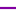

<!doctype html>
<html lang="en">
    <head>
        <meta charset="utf-8">
        <meta http-equiv="X-UA-Compatible" content="IE=edge">
        <meta name="viewport" content="initial-scale=1,user-scalable=no,maximum-scale=1,width=device-width">
        <meta name="mobile-web-app-capable" content="yes">
        <meta name="apple-mobile-web-app-capable" content="yes">
        <link rel="stylesheet" href="css/leaflet.css">
        <link rel="stylesheet" href="css/qgis2web.css"><link rel="stylesheet" href="css/fontawesome-all.min.css">
        <link rel="stylesheet" href="css/leaflet-control-geocoder.Geocoder.css">
        <style>
        #map {
            width: 1282px;
            height: 788px;
        }
        </style>
        <title></title>
    </head>
    <body>
        <div id="map">
        </div>
        <script src="js/qgis2web_expressions.js"></script>
        <script src="js/leaflet.js"></script>
        <script src="js/leaflet.rotatedMarker.js"></script>
        <script src="js/leaflet.pattern.js"></script>
        <script src="js/leaflet-hash.js"></script>
        <script src="js/Autolinker.min.js"></script>
        <script src="js/rbush.min.js"></script>
        <script src="js/labelgun.min.js"></script>
        <script src="js/labels.js"></script>
        <script src="js/leaflet-control-geocoder.Geocoder.js"></script>
        <script src="data/Nombredestationsdemtropararrondissement_0.js"></script>
        <script src="data/Lignesdemtro_1.js"></script>
        <script src="data/Stationsdemtro_2.js"></script>
        <script>
        var map = L.map('map', {
            zoomControl:true, maxZoom:28, minZoom:1
        }).fitBounds([[43.163719239844625,5.125052294520521],[43.40537037856355,5.6479845485785924]]);
        var hash = new L.Hash(map);
        map.attributionControl.setPrefix('<a href="https://github.com/tomchadwin/qgis2web" target="_blank">qgis2web</a> &middot; <a href="https://leafletjs.com" title="A JS library for interactive maps">Leaflet</a> &middot; <a href="https://qgis.org">QGIS</a>');
        var autolinker = new Autolinker({truncate: {length: 30, location: 'smart'}});
        var bounds_group = new L.featureGroup([]);
        function setBounds() {
            map.setMaxBounds(map.getBounds());
        }
        function pop_Nombredestationsdemtropararrondissement_0(feature, layer) {
            var popupContent = '<table>\
                    <tr>\
                        <td colspan="2"><strong>Station(s)</strong><br />' + (feature.properties['Station(s)'] !== null ? autolinker.link(feature.properties['Station(s)'].toLocaleString()) : '') + '</td>\
                    </tr>\
                    <tr>\
                        <td colspan="2"><strong>Nom</strong><br />' + (feature.properties['Nom'] !== null ? autolinker.link(feature.properties['Nom'].toLocaleString()) : '') + '</td>\
                    </tr>\
                    <tr>\
                        <td colspan="2"><strong>Code INSEE</strong><br />' + (feature.properties['Code INSEE'] !== null ? autolinker.link(feature.properties['Code INSEE'].toLocaleString()) : '') + '</td>\
                    </tr>\
                </table>';
            layer.bindPopup(popupContent, {maxHeight: 400});
        }

        function style_Nombredestationsdemtropararrondissement_0_0(feature) {
            if (feature.properties['Station(s)'] >= 0.000000 && feature.properties['Station(s)'] <= 0.000000 ) {
                return {
                pane: 'pane_Nombredestationsdemtropararrondissement_0',
                opacity: 1,
                color: 'rgba(35,35,35,1.0)',
                dashArray: '',
                lineCap: 'butt',
                lineJoin: 'miter',
                weight: 1.0, 
                fill: true,
                fillOpacity: 1,
                fillColor: 'rgba(255,255,255,1.0)',
                interactive: true,
            }
            }
            if (feature.properties['Station(s)'] >= 0.000000 && feature.properties['Station(s)'] <= 1.000000 ) {
                return {
                pane: 'pane_Nombredestationsdemtropararrondissement_0',
                opacity: 1,
                color: 'rgba(35,35,35,1.0)',
                dashArray: '',
                lineCap: 'butt',
                lineJoin: 'miter',
                weight: 1.0, 
                fill: true,
                fillOpacity: 1,
                fillColor: 'rgba(255,191,191,1.0)',
                interactive: true,
            }
            }
            if (feature.properties['Station(s)'] >= 1.000000 && feature.properties['Station(s)'] <= 2.000000 ) {
                return {
                pane: 'pane_Nombredestationsdemtropararrondissement_0',
                opacity: 1,
                color: 'rgba(35,35,35,1.0)',
                dashArray: '',
                lineCap: 'butt',
                lineJoin: 'miter',
                weight: 1.0, 
                fill: true,
                fillOpacity: 1,
                fillColor: 'rgba(255,128,128,1.0)',
                interactive: true,
            }
            }
            if (feature.properties['Station(s)'] >= 2.000000 && feature.properties['Station(s)'] <= 3.000000 ) {
                return {
                pane: 'pane_Nombredestationsdemtropararrondissement_0',
                opacity: 1,
                color: 'rgba(35,35,35,1.0)',
                dashArray: '',
                lineCap: 'butt',
                lineJoin: 'miter',
                weight: 1.0, 
                fill: true,
                fillOpacity: 1,
                fillColor: 'rgba(255,64,64,1.0)',
                interactive: true,
            }
            }
            if (feature.properties['Station(s)'] >= 3.000000 && feature.properties['Station(s)'] <= 4.000000 ) {
                return {
                pane: 'pane_Nombredestationsdemtropararrondissement_0',
                opacity: 1,
                color: 'rgba(35,35,35,1.0)',
                dashArray: '',
                lineCap: 'butt',
                lineJoin: 'miter',
                weight: 1.0, 
                fill: true,
                fillOpacity: 1,
                fillColor: 'rgba(255,0,0,1.0)',
                interactive: true,
            }
            }
        }
        map.createPane('pane_Nombredestationsdemtropararrondissement_0');
        map.getPane('pane_Nombredestationsdemtropararrondissement_0').style.zIndex = 400;
        map.getPane('pane_Nombredestationsdemtropararrondissement_0').style['mix-blend-mode'] = 'normal';
        var layer_Nombredestationsdemtropararrondissement_0 = new L.geoJson(json_Nombredestationsdemtropararrondissement_0, {
            attribution: '',
            interactive: true,
            dataVar: 'json_Nombredestationsdemtropararrondissement_0',
            layerName: 'layer_Nombredestationsdemtropararrondissement_0',
            pane: 'pane_Nombredestationsdemtropararrondissement_0',
            onEachFeature: pop_Nombredestationsdemtropararrondissement_0,
            style: style_Nombredestationsdemtropararrondissement_0_0,
        });
        bounds_group.addLayer(layer_Nombredestationsdemtropararrondissement_0);
        map.addLayer(layer_Nombredestationsdemtropararrondissement_0);
        function pop_Lignesdemtro_1(feature, layer) {
            var popupContent = '<table>\
                    <tr>\
                        <td colspan="2">' + (feature.properties['name'] !== null ? autolinker.link(feature.properties['name'].toLocaleString()) : '') + '</td>\
                    </tr>\
                </table>';
            layer.bindPopup(popupContent, {maxHeight: 400});
        }

        function style_Lignesdemtro_1_0() {
            return {
                pane: 'pane_Lignesdemtro_1',
                opacity: 1,
                color: 'rgba(130,0,162,1.0)',
                dashArray: '',
                lineCap: 'square',
                lineJoin: 'bevel',
                weight: 2.0,
                fillOpacity: 0,
                interactive: true,
            }
        }
        map.createPane('pane_Lignesdemtro_1');
        map.getPane('pane_Lignesdemtro_1').style.zIndex = 401;
        map.getPane('pane_Lignesdemtro_1').style['mix-blend-mode'] = 'normal';
        var layer_Lignesdemtro_1 = new L.geoJson(json_Lignesdemtro_1, {
            attribution: '',
            interactive: true,
            dataVar: 'json_Lignesdemtro_1',
            layerName: 'layer_Lignesdemtro_1',
            pane: 'pane_Lignesdemtro_1',
            onEachFeature: pop_Lignesdemtro_1,
            style: style_Lignesdemtro_1_0,
        });
        bounds_group.addLayer(layer_Lignesdemtro_1);
        map.addLayer(layer_Lignesdemtro_1);
        function pop_Stationsdemtro_2(feature, layer) {
            var popupContent = '<table>\
                    <tr>\
                        <td colspan="2"><strong>Arrêt</strong><br />' + (feature.properties['Arrêt'] !== null ? autolinker.link(feature.properties['Arrêt'].toLocaleString()) : '') + '</td>\
                    </tr>\
                </table>';
            layer.bindPopup(popupContent, {maxHeight: 400});
        }

        function style_Stationsdemtro_2_0() {
            return {
                pane: 'pane_Stationsdemtro_2',
                radius: 2.8,
                stroke: false,
                fill: true,
                fillOpacity: 1,
                fillColor: 'rgba(130,0,162,1.0)',
                interactive: true,
            }
        }
        map.createPane('pane_Stationsdemtro_2');
        map.getPane('pane_Stationsdemtro_2').style.zIndex = 402;
        map.getPane('pane_Stationsdemtro_2').style['mix-blend-mode'] = 'normal';
        var layer_Stationsdemtro_2 = new L.geoJson(json_Stationsdemtro_2, {
            attribution: '',
            interactive: true,
            dataVar: 'json_Stationsdemtro_2',
            layerName: 'layer_Stationsdemtro_2',
            pane: 'pane_Stationsdemtro_2',
            onEachFeature: pop_Stationsdemtro_2,
            pointToLayer: function (feature, latlng) {
                var context = {
                    feature: feature,
                    variables: {}
                };
                return L.circleMarker(latlng, style_Stationsdemtro_2_0(feature));
            },
        });
        bounds_group.addLayer(layer_Stationsdemtro_2);
        map.addLayer(layer_Stationsdemtro_2);
        var osmGeocoder = new L.Control.Geocoder({
            collapsed: true,
            position: 'topleft',
            text: 'Search',
            title: 'Testing'
        }).addTo(map);
        document.getElementsByClassName('leaflet-control-geocoder-icon')[0]
        .className += ' fa fa-search';
        document.getElementsByClassName('leaflet-control-geocoder-icon')[0]
        .title += 'Search for a place';
        var baseMaps = {};
        L.control.layers(baseMaps,{' Stations de métro': layer_Stationsdemtro_2,' Lignes de métro': layer_Lignesdemtro_1,'Nombre de stations de métro par arrondissement<br /><table><tr><td style="text-align: center;"></td><td>0 - 0</td></tr><tr><td style="text-align: center;"></td><td>0 - 1</td></tr><tr><td style="text-align: center;"></td><td>1 - 2</td></tr><tr><td style="text-align: center;"></td><td>2 - 3</td></tr><tr><td style="text-align: center;"></td><td>3 - 4</td></tr></table>': layer_Nombredestationsdemtropararrondissement_0,},{collapsed:false}).addTo(map);
        setBounds();
        </script>
    </body>
</html>
